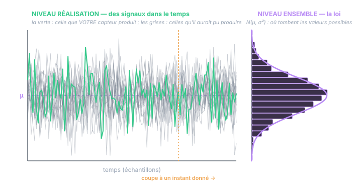

Chapitre 01
Le hasard et ses deux visages
Objectifs du chapitre
- Définir expérience aléatoire, variable aléatoire, réalisation — et ne plus jamais les confondre.
- Comprendre les deux niveaux de description : le niveau ensemble (la loi) et le niveau réalisation (les valeurs observées).
- Savoir classer chaque grandeur d'un problème de capteur dans son niveau.
- Voir où chaque niveau « vit » en pratique : le modèle, la simulation, la mesure.
1. Une expérience qu'on pourrait rejouer
Tout part d'une idée simple : une expérience aléatoire est une expérience dont le résultat n'est pas prévisible exactement, mais qu'on pourrait — au moins en pensée — rejouer autant de fois qu'on veut. Lancer un dé. Mais aussi, et c'est notre monde : lire un échantillon d'inclinomètre. Le capteur est immobile, l'angle vrai ne change pas, et pourtant deux lectures successives diffèrent : l'électronique, la thermique, la quantification injectent une part imprévisible.
Chaque « rejeu » de l'expérience produit un résultat concret : 5,13°, puis 4,97°, puis 5,08°… Ces valeurs s'appellent des réalisations. Elles sont ordinaires : des nombres, rien de plus.
2. La variable aléatoire : un modèle, pas un nombre
Face à ces valeurs qui fluctuent, le probabiliste fait un pas de côté. Plutôt que de courir après chaque valeur, il décrit la règle du jeu : l'objet mathématique qui dit quelles valeurs sont possibles et avec quelles chances. Cet objet est la variable aléatoire (VA). On la note en majuscule — Z — et ses réalisations en minuscule — z₁, z₂, …
z₁ = 5,13° z₂ = 4,97° z₃ = 5,08° (les réalisations : des nombres)
Retenez la formule : la VA est la machine, la réalisation est ce qui sort de la machine. La machine ne « vaut » rien tant qu'on ne tire pas ; et une fois qu'on a tiré, la valeur obtenue n'est plus aléatoire du tout — c'est un fait.
Analogie robuste : la VA est au nombre ce que le plan d'une pièce est à la pièce usinée. Le plan (avec ses tolérances) décrit toutes les pièces conformes possibles ; chaque pièce sortie de la machine en est une réalisation, avec ses cotes précises. Personne ne confond le plan et la pièce — il ne faut pas davantage confondre Z et z₁.
3. Les deux niveaux de description
Cette distinction fonde deux niveaux auxquels on peut décrire la même situation — et le grand art est de toujours savoir à quel niveau on parle.
- Le niveau réalisation : ce qui se passe dans ce monde-ci. Une exécution, une série temporelle, des valeurs concrètes. C'est le monde de vos mesures, de vos enregistrements, de la valeur vraie de l'angle à cet instant.
- Le niveau ensemble : la description de tous les mondes possibles. La loi, la moyenne, la variance. C'est le monde du modèle — et, on le verra, celui des matrices P, Q, R du filtre de Kalman.

On ne « convertit » jamais un niveau en l'autre. Il n'existe pas d'opération qui transforme une VA en réalisation temporelle — les deux coexistent. La question « comment passe-t-on de la variable aléatoire à la réalisation ? » a une réponse en un mot : en tirant (l'expérience a lieu, la nature tire une valeur). Et dans l'autre sens : en observant beaucoup de réalisations, on peut estimer la loi (ce sera le chapitre 8) — mais on ne la « voit » jamais directement.
4. Classer les grandeurs : l'exercice réflexe
Prenons votre problème type — un inclinomètre bruité, un filtre qui estime — et classons chaque grandeur. Ce tableau est à relire jusqu'à ce qu'il devienne un réflexe.
| Grandeur | Niveau | Nature |
|---|---|---|
| L'angle vrai θ à l'instant k | réalisation | une valeur — inconnue de vous, mais unique et bien définie |
| La lecture zₖ = 5,13° affichée | réalisation | un nombre observé — plus rien d'aléatoire une fois lu |
| « La lecture Zₖ » avant de la lire | ensemble | une VA : l'éventail de ce que le capteur peut afficher |
| Le bruit vₖ qui a réellement entaché zₖ | réalisation | une valeur tirée — jamais observable séparément |
| La variance R = σ² du bruit | ensemble | un paramètre de la loi — un fait du capteur, pas d'un tirage |
| L'estimé x̂ₖ du filtre | réalisation | un nombre calculé à partir des mesures observées |
| La covariance Pₖ du filtre | ensemble | l'étalement des erreurs sur tous les mondes possibles |
| La moyenne de 1000 lectures | les deux ! | le nombre calculé est une réalisation… de la VA « moyenne de 1000 lectures » (chapitre 8) |
La dernière ligne est subtile et capitale : une quantité calculée à partir de réalisations est elle-même la réalisation d'une VA (si on rejouait l'expérience, le calcul donnerait un autre nombre). C'est la clé de toute la statistique — on y consacrera le chapitre 8.
Le test des deux questions. Devant une grandeur, demandez : « si je rejouais l'expérience, cette grandeur changerait-elle ? » Si oui → il existe une VA derrière, et ce que vous avez sous les yeux en est une réalisation. Puis : « ce que je manipule, est-ce la valeur ou la description de ses possibles ? » La valeur = niveau réalisation ; la description (loi, moyenne, variance) = niveau ensemble.
5. Où vit chaque niveau en pratique
- Sur la machine (le PLC, le capteur) : tout est réalisation. Le capteur produit des nombres ; le filtre calcule des nombres (x̂)… et propage aussi, en parallèle, des objets de niveau ensemble (P) qui décrivent son incertitude. Deux récurrences côte à côte : l'une avance le pari, l'autre avance le doute.
- Dans le modèle (sur papier) : tout est ensemble. Quand on écrit zₖ = θₖ + vₖ, vₖ ∼ N(0, R), on décrit la règle qui gouverne toutes les exécutions possibles.
- En simulation : on fait les deux ! Le simulateur tire des réalisations (une vérité terrain, des bruits) — c'est le seul endroit où l'on fabrique explicitement des réalisations à partir de la loi. Puis on donne les mesures simulées au filtre et on vérifie que ses objets d'ensemble (P) décrivent bien la dispersion réelle des erreurs. Toutes les figures de ce cours sont fabriquées ainsi.
Le vocabulaire garde la trace de cette dualité : on parle de moyenne d'ensemble (sur tous les mondes possibles, à un instant donné) et de moyenne temporelle (le long d'une seule réalisation). Les deux ne coïncident pas toujours — la question de savoir quand elles coïncident (l'ergodicité) sera au cœur du chapitre 5, et c'est elle qui justifie qu'on puisse mesurer un R (objet d'ensemble) à partir d'un seul enregistrement (une réalisation).
Exercices
Exercice 1 — Classer sans se tromper
Pour chaque grandeur, dites si c'est une réalisation, un objet d'ensemble, ou la réalisation d'une VA « calculée » : (a) la température affichée à l'instant par la sonde de l'armoire ; (b) le σ = 0,4° écrit sur la datasheet de l'inclinomètre ; (c) la NIS calculée au cycle k par votre filtre ; (d) la matrice Q de votre modèle ; (e) l'erreur x − x̂ commise à cet instant par le filtre.
Voir la solution
- (a) Réalisation : un nombre observé.
- (b) Ensemble : un paramètre de la loi du bruit — il ne change pas d'un tirage à l'autre.
- (c) Réalisation d'une VA calculée : le nombre y²/S obtenu ce cycle-ci est un tirage de la VA « NIS », dont la loi (χ², niveau ensemble) sert justement de référence pour juger la cohérence.
- (d) Ensemble : la covariance du bruit de process, un paramètre du modèle.
- (e) Réalisation : une valeur précise… que vous ne connaîtrez jamais (il faudrait connaître x). Vous ne connaissez que sa loi : moyenne nulle (si le filtre est non biaisé) et covariance P.
Exercice 2 — Le capteur rejoué
Votre inclinomètre immobile affiche z₁ = 5,13°. Un collègue déclare : « la probabilité que z₁ dépasse 5° est de 40 % ». Que répondez-vous, en distinguant les niveaux ?
Voir la solution
z₁ est une réalisation : elle vaut 5,13°, point. Elle dépasse 5° avec certitude — la probabilité n'a pas de sens pour un nombre déjà observé. La phrase correcte au niveau ensemble serait : « la probabilité qu'une lecture Z (avant de la faire) dépasse 5° est de 40 % » — un énoncé sur la VA, c'est-à-dire sur la population de toutes les lectures possibles. Le glissement entre les deux formulations paraît anodin ; c'est pourtant lui qui rend les chapitres de probabilité incompréhensibles quand on le laisse passer.
Exercice 3 — Où est la VA ?
Dans la prédiction du filtre de Kalman, on écrit x⁻ = F·x̂ (des nombres) puis P⁻ = F·P·Fᵀ + Q (des matrices). Aucun bruit w n'apparaît dans le calcul. Où est-il passé ?
Voir la solution
Le bruit w est une VA dont on ne connaîtra jamais la réalisation. Le filtre l'utilise donc par sa loi seulement : sa moyenne (nulle) ne déplace pas x⁻ — c'est pourquoi il « disparaît » de la première équation — et sa covariance Q vient gonfler P⁻ dans la seconde. Les deux équations travaillent à deux niveaux différents : la première avance le pari (réalisation calculée), la seconde avance le doute (objet d'ensemble). C'est exactement la lecture à avoir des chapitres 6.2 et 6.3 du cours Kalman.
Récapitulatif
- Expérience aléatoire : rejouable, résultat imprévisible. Réalisation : le résultat concret d'un rejeu (un nombre). Variable aléatoire : la règle qui décrit tous les résultats possibles (la machine, pas ce qui en sort).
- Deux niveaux : réalisation (ce monde-ci — mesures, valeurs vraies, estimés) et ensemble (tous les mondes possibles — lois, moyennes, variances, P/Q/R).
- On ne convertit pas un niveau en l'autre : on tire (loi → valeur, ce que fait la nature ou un simulateur) ou on estime (valeurs → loi, chapitre 8).
- Une grandeur calculée à partir de mesures est la réalisation d'une VA : elle aurait été différente dans un autre monde. C'est le fondement de la statistique.
- Dans le filtre de Kalman : x̂ avance le pari (niveau réalisation), P avance le doute (niveau ensemble) — deux récurrences en parallèle.